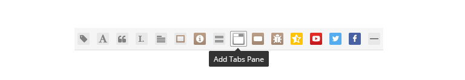

IESDB Web Documentation
IT’S AN AWESOME SITE TO INCREASE USER EXPERIENCE
We have great several features to increase your perusal pleasure and focusing.
We'll make this process quick and easy!
- Author:Desmond G. Jones, Pacific North Web Development
- Live Preview:View Demo
- Support:Ask a Question
- Created:16 May 2016
Howdy!
You are a shining owner of a regular license based
on LaRead — WordPress Blog Template
This page will help you to work with theme. Possibly, we tried to be descriptive to learn about theme’s structure and features.
If you have any problem or concern about the product, please don’t hesitate to contact with us. We will help you with satisfaction. Need support →
NOTICE
Please, before asking for help, make sure you are using the last theme´s version.
1LaRead — Quick View
Laread offers several great features that will become a habit for you, to maximize the user experience. Everything that you need is right where they should be.
Great Features
- Banner Mode
- Quick Read (light/dark)
- Push Bar
Some contents are more important. Under favor of "banner mode" you can drive forward the contents that you want to draw the visitor's attention.
Eyes are sensitive. For us, reading experience has importance under any environment/light. Daytime "Light" Nighttime "Dark".
This feature makes your visitors reach the post titles fast and enables ease of use for mobile devices.
Do not care about the image size, “LaRead” does not make concessions to ensure to you for the best user experience.
Laread - Intro
2Installation
Extract the contents of the zipped package downloaded trom Themeforest.net to your computer. In the contents of the package, you’ll find these files below:
- Documentation Folder (Contains this document)
- Demo Content Folder (Contains demo xml file: laread-demo.xml)
- laread-wp_theme.zip (Main theme)
There are two possible ways to install the theme:
Install via Wordpress (Recommended)
- Go to Appearance → Themes → Add New
- Click Upload Theme (on the top)
- In the uploader screen choose laread-wp_theme.zip from your computer.
- Click Activate after upload process.
Install via Ftp
- Extract the laread-wp_theme.zip file
- Upload the extracted laread folder to /wp-content/themes/ folder on your server using with any FTP software.
If you are not familiar with FTP or looking for any FTP software, FileZilla is easy to use.
Laread — How To Install and Customize?
3Recommended Plugins
In order to extend theme functionality, Laread theme comes with one plugin.
You can install and activate the plugins in Appearance → Install Plugins
Screenshot: Install Recommended Plugins
Zilla Likes: You can show and manage your users love post with this plugin.
WP Mail SMTP: Reconfigures the wp_mail() function to use SMTP instead of mail() and creates an options page to manage the settings.
4Update Theme
Auto Update
Laread theme recommends some plugins after installation. One of them is “Envato Wordpress Toolkit” which automatically alert you on your dashboard when a new version of the theme is available.
If you didn’t install the plugin yet, follow these steps:
- Go to Appearance → Install Plugins
- Hover over “Envato Wordpress Toolkit” and click “Install Plugin”
- After you install the plugin you’ll see “Envato Toolkit” button on the left menu.
Update Manually
- Download the latest version of the theme on Themeforest.net and extract it
- Deactivate current version of Laread. theme (Simply activate another theme)
- Delete the old version of the theme, and upload latest version. (If you are using child theme, keep it as is, delete parent theme only)
5Demo Content
The package you downloaded from Themeforest.net includes a file named laread-demo.xml. This file contains demo content except licensed images which are replaced by placeholders.
To import sample data, follow these steps:
- Go to Tools → Import
- In the import page screen click on Wordpress in the list.
- If this plugin didn’t installed yet
- On the popup window click Install Now
- After installed successfully, click Activate Plugin & Run Importer
- Select laread-demo.xml file and run the import process
After successfully import, go to Appearance → Menus and assign “Primary Menu” theme location.
6Theme Options (customize)
Laread theme has plenty of options to customize the appearance of the theme.
Navigate to Apparance → Customize to make changes.
Screenshot: Apparance → Customize
- Site Identity (Site Title, Tagline and Site Icon (favicon))
-
General (General layout options)
- Inline Page Template (page template for archive,categories)
- Single Page Template (with sidebar, without sidebar)
- Gallery Post Limit (for page template gallery v1 and gallery v2)
- Background Color (general web page background color)
- Primary Color (post content color)
- Link Color (generally post title color)
- Link Hover Color (generally post title hover color)
- Social Links (facebook, twitter, instagram, github etc...)
-
Header (style of header)
- Logo (your logo)
- Logo Retina (your logo 2x)
- Background Color (header background color)
- Link Color (header text color)
- Pushbar Type (pushbar style full with and default) (more about pushbar)
- Pushbar Categories (pushbar show categories)
- Pushbar Post Limit
-
Footer (style of footer)
- Logo (your logo)
- Logo Retina (your logo 2x)
- Background Color (header background color)
- Tagline (footer tagline)
-
Quick Read ( Quick Read Logo)
- Light Logo (for light theme)
- Dark Logo (for dark theme)
- Menus (Once you create the menu, add pages or custom links to it and assign the menu to any theme location as shown below.)
- Widgets (more about widgets)
- Static Front Page (you can select a static front page.) (more static front page)
7Blog Styles
“LaRead — WordPress Blog Template” offers 5 different interfaces convenient for your style and contents. Supported by a large number of post / the widget format, it allows to create rich contents.
You can select home page: Settings → General → Reading → Front Page Displays — Front page:
01. BANNER MODE
Laread offers several great features that will become a habit for you, to maximize the user experience. Everything that you need is right where they should be.
Screenshots
Banner Mode
02. LARGE IMAGE
Large visual areas. LaRead gives you flexibility to create your contents. 17 different post formats help you to ideally publish contents that may need. In the large image version, retentively large visual fields, we allow to appeal to your eyes.
Screenshots

Large Image
03. MEDIUM WITH SIDEBAR
We reinterpreted our blogs with our different perspectives. Not less, not more. However, it is certainly more different and elegant than the others. In this version, 12 different widgets that will accompany for your contents ready to use. We have a good relationship with numbers.
Screenshots
Medium With Sidebar
04. MEDIUM WITHOUT SIDEBAR
If your fingers are so fast about producing contents, this version may accompany to you. As in other versions, it is literally in harmony with mobile devices. In this version, we achieved to fit more content on the screen.
Screenshots
Medium Without Sidebar
05. MASONRY
And more contents. Do not care about the image size, “LaRead” does not make concessions to ensure to you for the best user experience. When everything is drifting from time tunnel, you can stop the time by select contents what you want. The choice is yours.
Screenshots
Masonry
8Page Templates
You can select 1 of 15 page templates included with this theme:
- About v1
- About v2
- Archives
- Authors
- Banner Mode v1
- Banner Mode v2
- Contact v1
- Contact v2
- Gallery v1
- Gallery v2
- Gallery v3
- Large Image
- Masonry
- Medium With Sidebar
- Medium Without Sidebar
You can select page templates: Pages → Edit → Page Attributes
NOTICE
You should add tag "banner" for post banner mode.
9Post Types
LaRead gives you flexibility to create your contents. 17 different post formats help you to ideally publish contents that may need.
17 Diffrent Post Types
- Standart Post
- Image Post
- Gallery Post
- Video Post
- Audio Post
- Quote Post
- Link Post
- Status Post
- Aside Post
- Hot Event Post
- Chat Post
- Code Post
- Event/Activity Post
- Twitter Post
- Facebook Post
- Reviews/Rating Post
- Changelog Post
Screenshot: WP Panel (posts → add new)
10Push Bar (for posts)
LaRead have 2 Push Bar for Posts, changing data-navbar-type for one of them. Choosing beetwen are "default" or "full width". All version supported isotope filtering.
You can change Apparance → Customize → Header → Pushbar Types
Screenshots
default Push Bar (for posts)
full width Push Bar (for posts)
11Widgets
WordPress Widgets add content and features to your Sidebars. They can be added, removed and rearranged on the Theme Customizer Appearance → Customize or Appearance → Widgets in the WordPress Administration Screens. Laread theme comes with 12 widgets.
01. LaRead Search This widget shows Search like laread style
02. LaRead Categories This widget shows categories like laread style
03. LaRead Popular Posts This widget shows the popular posts.
04. LaRead Tags This widget shows Tags like laread style
05. LaRead Quote This widget shows Quote like laread style
06. LaRead Social Networks This widget allows you to add social media icons of popular social networks to your website.
07. LaRead Text This widget add a lot of feature. for example text, ads, facebook widget etc...
08. LaRead Archive This widget shows archive like laread style
09. LaRead Instagram This widget shows latest Instagram images from your Instagram profile.
10. LaRead Flickr This widget shows latest Flickr images from your Flickr profile.
11. LaRead Twitter This widget shows Twitter widget.
12. Calendar
Instagram Api
In order to use instagram widget you will need create a new API key and grab a "Client ID".
- Go to Instagram Developers Website: http://instagram.com/developer/
- Sign In
- Click On Manage Clients
- Click on Register New Clint
- In Register new Client ID page add your website info .. you can add your website url to OAuth redirect_uri
- Click Submit
- In The Next Page You Will See The Client ID
- Now to get instagram user id, http://jelled.com/instagram/lookup-user-id
12ShortCodes
Laread theme comes with 16 different shortcodes.
01. Add Label Example of use:
Code:
[laread_label color="golden"]Text here[/laread_label]
Parametres:
color="golden", color="grey", color="primary", color="success", color="info", color="warning", color="danger"
02. Add First Letter Example of use:
Code:
[laread_first_letter]Text here[/laread_first_letter]
03. Quotes with Ratings Example of use:
Code:
[laread_quote name="Name" info="Info" stars="5" ]Text here[/laread_quote]
Parametres:
stars="1", stars="2", stars="3"...
04. Add Striking Example of use:
Code:
[laread_striking number="1"]Text here[/laread_striking]
Parametres:
number="1", number="2", number="3"...
05. Add Preformat Example of use:
Code:
[laread_preformat]Text here[/laread_preformat]
06. Add a Promotebox Example of use:

Code:
[laread_promotebox title="TITLE" type="promote-box" button_color="btn-golden" button_name="BUTTON" button_link="#"]Text here[/laread_promotebox]
Parametres:
type="promote-box", type="promote-box-center", type="promote-cologreen"
07. Add a Notification Example of use:
Code:
[laread_notification type="success"]Text here[/laread_notification]
Parametres:
type="success", type="info", type="warning", type="danger"
08. Add Accordion Pane Example of use:
Code:
[laread_accordion type="with-outline"] [panel title="panel 1"]Panel 1 content here[/panel] [panel title="panel 2"]Panel 2 content here[/panel] [/laread_accordion]
Parametres:
title="panel 1", title="panel 2", title="panel 3" ...
09. Add Tabs Pane Example of use:
Code:
[tabgroup type="with-outline"] [tab title="Tab 1"]Tab 1 content here[/tab] [tab title="Tab 2"]Tab 2 content here[/tab] [/tabgroup]
Parametres:
type="with-outline" or type="without-outline"
10. Add a Button Example of use:
Code:
[laread_button link="#" target="" type="btn-outline btn-rounded" color="btn-golden"]Text here[/laread_button]
Parametres:
type="btn-outline btn-rounded", type="btn-rounded", type="btn-outline", type="btn"
color="btn-golden", color="btn-grey", color="btn-primary", color="btn-success", color="btn-info", color="btn-warning", color="btn-danger"
11. Add a Changelog Example of use:

Code:
[laread_changelog name="Update Log" title="Title" other_title_link="#" other_title="full changelog"]Text here[/laread_changelog]
12. Add a Review Example of use:
Code:
[laread_review name="Name" date="" stars="5"]Text here[/laread_review]
Parametres:
stars="1", stars="2", stars="3" ...
13. Add a Iframe Code Example of use:
Code:
[laread_iframe desc=""]Iframe Code[/laread_iframe]
14. Add a Twitter Example of use:
Code:
[laread_twitter]Embed code[/laread_twitter]
15. Add a Facebook Example of use:

Code:
[laread_facebook]Embed code[/laread_facebook]
16. Add a Divider Example of use:
Code:
[divider type="triagle"][/divider]
13Translation & RTL
Laread theme allows you to translate the theme into any language. To translate the theme:
- Download and install POEdit translation editor (https://poedit.net/)
- Go to the theme translation folder (laread/languages/)
- Make a copy of the file “laread.po” and rename the file to the locale of your language. For example, German would be de_DE.po. See language code list here. http://codex.wordpress.org/WordPress_in_Your_Language
- Open POEdit and load the file. (i.e de_DE.po)
- Translate all the strings in the list and save changes. After you save, you will have two files. (i.e. de_DE.po and de_DE.mo)
- Upload these files to laread/languages/
- For WordPress 4.0 and above, go to Settings → General and select Site Language
- For WordPress 3.9.2 and below, open your wp_config.php file in the root, and find this line: define(‘WPLANG’, ‘’); Change it into your language code. For example, define(‘WPLANG’, ‘de_DE’);
14FAQ
How can i change or display author/user avatar?
To change user avatar (seen on author box, author archive page or author page template etc. ) you have two options:
- Wordpress fetches user avatar automatically from your Gravatar.com by default. Create a free account on gravatar.com and make sure the email of the user is the one used to create the Gravatar account.
- You can install some plugin which will allow you to change the user avatar instead of registering gravatar. For example, check this plugin called Simple Local Avatars
I composed a page with using Page Builder. How can i set this page as default home page?
- Go to Appearance → Customize
- Click Static Front Page
- Select your page in the Front Page
15Support and Credits
We thank to great artists who give a magic touch to our theme with their unique work so much.
Content is king.
If you need any help. Feel free to contact me anytime. I will reply in 24 hours.
Send a mail from my Themeforest Profile | Facebook | Twitter
Free Fonts Used (google fonts)
Photo Credits
Tools
- Front-End Framework:Twitter Bootstrap
- Font Icon:Font Awesome
JS
- Javascript Library:Jquery
- Colorbox:Jacklmoore.com
- Bootstrap Extend:Jasny Bootstrap
- Bootstrap Gallery:Blurimp Bootstrap Gallery
- Masonry:masonry.desandro.com
- Calendar:Zabuto Calendar
Back-End
- Titan Framework:titanframework.net
- TGM Plugin Activation:tgmpluginactivation.com
© 2016 Evmet. Pure Passion